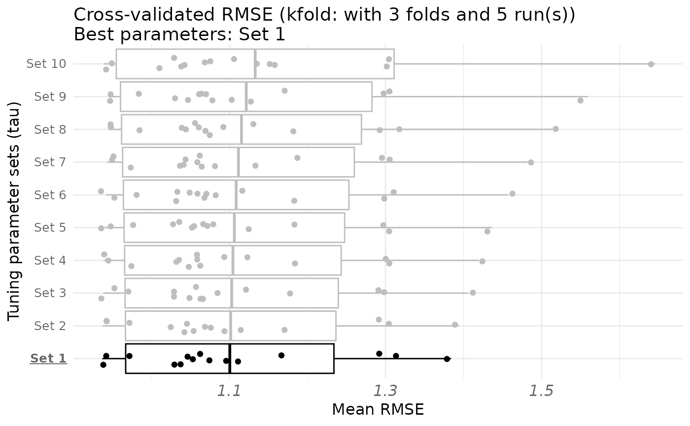
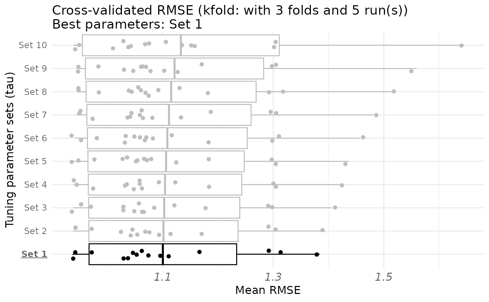

This function is used to select automatically "sparsity", "tau" or "ncomp" by cross-validation. This function only applies in a supervised setting, and filling the response argument is therefore mandatory.
Usage
rgcca_cv(
blocks,
method = "rgcca",
response = NULL,
par_type = "tau",
par_value = NULL,
par_length = 10,
validation = "kfold",
prediction_model = "lm",
metric = NULL,
k = 5,
n_run = 1,
n_cores = 1,
quiet = TRUE,
superblock = FALSE,
scale = TRUE,
scale_block = TRUE,
tol = 1e-08,
scheme = "factorial",
NA_method = "na.ignore",
rgcca_res = NULL,
tau = 1,
ncomp = 1,
sparsity = 1,
init = "svd",
bias = TRUE,
verbose = TRUE,
n_iter_max = 1000,
comp_orth = TRUE,
...
)Arguments
- blocks
A list that contains the \(J\) blocks of variables \(\mathbf{X_1}, \mathbf{X_2}, ..., \mathbf{X_J}\). Block \(\mathbf{X}_j\) is a matrix of dimension \(n \times p_j\) where \(n\) is the number of observations and \(p_j\) the number of variables. The blocks argument can be also a fitted cval, rgcca or permutation object.
- method
A string specifying which multiblock component method to consider. Possible values are found using available_methods.
- response
A numerical value giving the position of the response block. When the response argument is filled, the supervised mode is automatically activated.
- par_type
A character giving the parameter to tune among "sparsity", "tau" or "ncomp".
- par_value
The parameter values to be tested, either NULL, a numerical vector of size \(J\), or a matrix of size \(\text{par_length} \times J\).
If par_value is NULL, up to par_length sets of parameters are generated uniformly from the minimum and maximum possible values of the parameter defined by par_type for each block. Minimum possible values are 0 for tau, \(1/\text{sqrt}(p_j)\) for sparsity, and 1 for ncomp. Maximum possible values are 1 for tau and sparsity, and \(p_j\) for ncomp.
If par_value is a vector, it overwrites the maximum values taken for the range of generated parameters.
If par_value is a matrix, par_value directly corresponds to the set of tested parameters.
- par_length
An integer indicating the number of sets of candidate parameters to be tested (if par_value is not a matrix).
- validation
A string specifying the type of validation among "loo" and "kfold". For small datasets (e.g. <30 samples), it is recommended to use a loo (leave-one-out) procedure.
- prediction_model
A string giving the model used for prediction. Please see caret::modelLookup() for a list of the available models.
- metric
A string indicating the metric of interest. It should be one of the following scores:
For classification: "Accuracy", "Kappa", "F1", "Sensitivity", "Specificity", "Pos_Pred_Value", "Neg_Pred_Value", "Precision", "Recall", "Detection_Rate", "Balanced_Accuracy".
For regression: "RMSE", "MAE".
- k
An integer giving the number of folds (if validation = 'kfold').
- n_run
An integer giving the number of Monte-Carlo Cross-Validation (MCCV) to be run (if validation = 'kfold').
- n_cores
The number of cores used for parallelization.
- quiet
A logical value indicating if some diagnostic messages are reported.
- superblock
A logical value indicating if the superblock option is used.
- scale
A logical value indicating if variables are standardized.
- scale_block
A logical value or a string indicating if each block is scaled.
If TRUE or "inertia", each block is divided by the sum of eigenvalues of its empirical covariance matrix.
If "lambda1", each block is divided by the square root of the highest eigenvalue of its empirical covariance matrix.
If standardization is applied (scale = TRUE), the block scaling applies on the standardized blocks.
- tol
The stopping value for the convergence of the algorithm (default: tol = 1e-08).
- scheme
A string or a function specifying the scheme function applied to covariance maximization among "horst" (the identity function), "factorial" (the square function - default value), "centroid" (the absolute value function). The scheme function can be any continously differentiable convex function and it is possible to design explicitely the scheme function (e.g. function(x) x^4) as argument of the function. See (Tenenhaus et al, 2017) for details.
- NA_method
A string indicating the method used for handling missing values ("na.ignore", "na.omit"). (default: "na.ignore").
"na.omit"corresponds to perform RGCCA on the fully observed observations (observations from which missing values have been removed)."na.ignore"corresponds to perform RGCCA algorithm on available data (See Tenenhaus et al, 2005).
- rgcca_res
A fitted RGCCA object (see
rgcca).- tau
Either a numerical value, a numeric vector of size \(J\), or a numeric matrix of dimension \(\mathrm{max}(\text{ncomp}) \times J\) containing the values of the regularization parameters (default: tau = 1, for each block and each dimension), or a string equal to "optimal". The regularization parameters varies from 0 (maximizing the correlation) to 1 (maximizing the covariance).
If tau is a numerical value, tau is identical accross all constraints applied to all block weight vectors.
If tau is a vector, tau[j] is used for the constraints applied to all the block weight vectors associated to block \(\mathbf X_j\).
If tau is a matrix, tau[k, j] is associated with the constraints applied to the kth block weight vector correpsonding to block \(\mathbf X_j\).
If tau = "optimal" the regularization parameters are estimated for each block and each dimension using the Schafer and Strimmer (2005) analytical formula. The tau parameters can also be estimated using rgcca_permutation or rgcca_cv.
- ncomp
A numerical value or a vector of length \(J\) indicating the number of components per block. If a single value is provided, the same number of components is extracted for every block.
- sparsity
Either a numerical value, a numeric vector of size \(J\) or a numeric matrix of dimension \(\text{max}(\text{ncomp}) \times J\) encoding the L1 constraints applied to the block weight vectors. For block \(j\), the amount of sparsity varies between \(1/\text{sqrt}(p_j)\) and 1 (larger values of sparsity correspond to less penalization).
If sparsity is a numerical value, then sparsity is identical accross all constraints applied to all block weight vectors.
If sparsity is a vector, sparsity[j] is identical across the constraints applied to the block weight vectors associated to block \(\mathbf X_j\): $$\forall k, \Vert a_{j,k} \Vert_{1} \le \text{sparsity}[j] \sqrt{p_j}.$$
If sparsity is a matrix, sparsity[k, j] is associated with the constraints applied to the kth block weight vector correpsonding to block \(\mathbf X_j\): $$\Vert a_{j,k}\Vert_{1} \le \text{sparsity}[k,j] \sqrt{p_j}.$$
The sparsity parameter can be estimated by using rgcca_permutation or rgcca_cv.
- init
A string giving the type of initialization to use in the RGCCA algorithm. It could be either by Singular Value Decompostion ("svd") or by random initialisation ("random") (default: "svd").
- bias
A logical value for biaised (\(1/n\)) or unbiaised (\(1/(n-1)\)) estimator of the variance/covariance (default: bias = TRUE).
- verbose
A logical value indicating if the progress of the algorithm is reported while computing.
- n_iter_max
Integer giving the algorithm's maximum number of iterations.
- comp_orth
A logical value indicating if the deflation should lead to orthogonal block components or orthogonal block weight vectors.
- ...
Additional parameters to be passed to prediction_model.
Value
A cval object that can be printed and plotted.
- k
An integer giving the number of folds.
- n_run
An integer giving the number of MCCV.
- opt
A list containing some options of the RGCCA model.
- metric
A string indicating the metric used during the process of cross-validation.
- cv
A matrix of dimension par_length x (k x n_run). Each row of cv corresponds to one set of candidate parameters. Each column of cv corresponds to the cross-validated score of a specific fold in a specific run.
- call
A list of the input parameters of the RGCCA model.
- par_type
The type of parameter tuned (either "tau", "sparsity", or "ncomp").
- best_params
The set of parameters that yields the best cross-validated scores.
- params
A matrix reporting the sets of candidate parameters used during the cross-validation process.
- validation
A string specifying the type of validation (either "loo" or "kfold").
- stats
A data.frame containing various statistics (mean, sd, median, first quartile, third quartile) of the cross-validated score for each set of parameters that has been tested.
- prediction_model
A string giving the model used for prediction.
Details
If the response block is univariate. The RGCCA components of each block are used as input variables of the predictive model (specified by "prediction_model") to predict the response block. The best combination of parameters is the one with the best cross-validated score. For multivariate response block, The RGCCA components of each block are used as input variables of the predictive models (specified by "prediction_model") to predict each column of the response block. The cross-validated scores of each model are then averaged. The best combination of parameters is the one with the best averaged cross-validated score.
Examples
# Cross_validation for classification
set.seed(27) #favorite number
data(Russett)
blocks <- list(
agriculture = Russett[, 1:3],
industry = Russett[, 4:5],
politic = as.factor(apply(Russett[, 9:11], 1, which.max))
)
cv_out <- rgcca_cv(blocks, response = 3, method = "rgcca",
par_type = "tau",
prediction_model = "lda", #caret::modelLookup()
metric = "Accuracy",
k=3, n_run = 5)
#>
| | 0 % ~calculating
|+ | 1 % ~07s
|++ | 3 % ~06s
|++ | 4 % ~06s
|+++ | 5 % ~06s
|++++ | 7 % ~06s
|++++ | 8 % ~06s
|+++++ | 9 % ~06s
|++++++ | 11% ~06s
|++++++ | 12% ~05s
|+++++++ | 13% ~05s
|++++++++ | 15% ~05s
|++++++++ | 16% ~05s
|+++++++++ | 17% ~05s
|++++++++++ | 19% ~05s
|++++++++++ | 20% ~05s
|+++++++++++ | 21% ~05s
|++++++++++++ | 23% ~05s
|++++++++++++ | 24% ~05s
|+++++++++++++ | 25% ~05s
|++++++++++++++ | 27% ~05s
|++++++++++++++ | 28% ~05s
|+++++++++++++++ | 29% ~04s
|++++++++++++++++ | 31% ~04s
|++++++++++++++++ | 32% ~04s
|+++++++++++++++++ | 33% ~04s
|++++++++++++++++++ | 35% ~04s
|++++++++++++++++++ | 36% ~04s
|+++++++++++++++++++ | 37% ~04s
|++++++++++++++++++++ | 39% ~04s
|++++++++++++++++++++ | 40% ~04s
|+++++++++++++++++++++ | 41% ~04s
|++++++++++++++++++++++ | 43% ~04s
|++++++++++++++++++++++ | 44% ~04s
|+++++++++++++++++++++++ | 45% ~03s
|++++++++++++++++++++++++ | 47% ~03s
|++++++++++++++++++++++++ | 48% ~03s
|+++++++++++++++++++++++++ | 49% ~03s
|++++++++++++++++++++++++++ | 51% ~03s
|++++++++++++++++++++++++++ | 52% ~03s
|+++++++++++++++++++++++++++ | 53% ~03s
|++++++++++++++++++++++++++++ | 55% ~03s
|++++++++++++++++++++++++++++ | 56% ~03s
|+++++++++++++++++++++++++++++ | 57% ~03s
|++++++++++++++++++++++++++++++ | 59% ~03s
|++++++++++++++++++++++++++++++ | 60% ~03s
|+++++++++++++++++++++++++++++++ | 61% ~02s
|++++++++++++++++++++++++++++++++ | 63% ~02s
|++++++++++++++++++++++++++++++++ | 64% ~02s
|+++++++++++++++++++++++++++++++++ | 65% ~02s
|++++++++++++++++++++++++++++++++++ | 67% ~02s
|++++++++++++++++++++++++++++++++++ | 68% ~02s
|+++++++++++++++++++++++++++++++++++ | 69% ~02s
|++++++++++++++++++++++++++++++++++++ | 71% ~02s
|++++++++++++++++++++++++++++++++++++ | 72% ~02s
|+++++++++++++++++++++++++++++++++++++ | 73% ~02s
|++++++++++++++++++++++++++++++++++++++ | 75% ~02s
|++++++++++++++++++++++++++++++++++++++ | 76% ~02s
|+++++++++++++++++++++++++++++++++++++++ | 77% ~01s
|++++++++++++++++++++++++++++++++++++++++ | 79% ~01s
|++++++++++++++++++++++++++++++++++++++++ | 80% ~01s
|+++++++++++++++++++++++++++++++++++++++++ | 81% ~01s
|++++++++++++++++++++++++++++++++++++++++++ | 83% ~01s
|++++++++++++++++++++++++++++++++++++++++++ | 84% ~01s
|+++++++++++++++++++++++++++++++++++++++++++ | 85% ~01s
|++++++++++++++++++++++++++++++++++++++++++++ | 87% ~01s
|++++++++++++++++++++++++++++++++++++++++++++ | 88% ~01s
|+++++++++++++++++++++++++++++++++++++++++++++ | 89% ~01s
|++++++++++++++++++++++++++++++++++++++++++++++ | 91% ~01s
|++++++++++++++++++++++++++++++++++++++++++++++ | 92% ~01s
|+++++++++++++++++++++++++++++++++++++++++++++++ | 93% ~00s
|++++++++++++++++++++++++++++++++++++++++++++++++ | 95% ~00s
|++++++++++++++++++++++++++++++++++++++++++++++++ | 96% ~00s
|+++++++++++++++++++++++++++++++++++++++++++++++++ | 97% ~00s
|++++++++++++++++++++++++++++++++++++++++++++++++++| 99% ~00s
|++++++++++++++++++++++++++++++++++++++++++++++++++| 100% elapsed=06s
print(cv_out)
#> Call: method='rgcca', superblock=FALSE, scale=TRUE, scale_block=TRUE, init='svd',
#> bias=TRUE, tol=1e-08, NA_method='na.ignore', ncomp=c(1,1,1), response=3,
#> comp_orth=TRUE
#> There are J = 3 blocks.
#> The design matrix is:
#> agriculture industry politic
#> agriculture 0 0 1
#> industry 0 0 1
#> politic 1 1 0
#>
#> The factorial scheme is used.
#>
#> Tuning parameters (tau) used:
#> agriculture industry politic
#> 1 1.000 1.000 0
#> 2 0.889 0.889 0
#> 3 0.778 0.778 0
#> 4 0.667 0.667 0
#> 5 0.556 0.556 0
#> 6 0.444 0.444 0
#> 7 0.333 0.333 0
#> 8 0.222 0.222 0
#> 9 0.111 0.111 0
#> 10 0.000 0.000 0
#>
#> Validation: kfold with 3 folds and 5 run(s))
#> Prediction model: lda
#>
#> Tuning parameters Mean Accuracy Sd
#> 1 1.00/1.00/0.00 0.731 0.0719
#> 2 0.89/0.89/0.00 0.731 0.0719
#> 3 0.78/0.78/0.00 0.731 0.0719
#> 4 0.67/0.67/0.00 0.731 0.0719
#> 5 0.56/0.56/0.00 0.731 0.0848
#> 6 0.44/0.44/0.00 0.739 0.0830
#> 7 0.33/0.33/0.00 0.739 0.0830
#> 8 0.22/0.22/0.00 0.744 0.0883
#> 9 0.11/0.11/0.00 0.752 0.0833
#> 10 0.00/0.00/0.00 0.757 0.1056
#>
#> The best combination is: 0.00/0.00/0.00 for a mean Accuracy of 0.757.
plot(cv_out)
 # A fitted cval object is given as output of the rgcca() function
fit_opt = rgcca(cv_out)
# Cross_validation for regression
set.seed(27) #favorite number
data(Russett)
blocks <- list(
agriculture = Russett[, 1:3],
industry = Russett[, 4:5],
politic = Russett[, 6:8]
)
cv_out <- rgcca_cv(blocks, response = 3, method = "rgcca",
par_type = "tau",
par_value = c(0.6, 0.75, 0.8),
prediction_model = "lm", #caret::modelLookup()
metric = "RMSE",
k=3, n_run = 5)
#>
| | 0 % ~calculating
|+ | 1 % ~04s
|++ | 3 % ~04s
|++ | 4 % ~04s
|+++ | 5 % ~04s
|++++ | 7 % ~04s
|++++ | 8 % ~04s
|+++++ | 9 % ~04s
|++++++ | 11% ~04s
|++++++ | 12% ~04s
|+++++++ | 13% ~04s
|++++++++ | 15% ~04s
|++++++++ | 16% ~04s
|+++++++++ | 17% ~04s
|++++++++++ | 19% ~03s
|++++++++++ | 20% ~03s
|+++++++++++ | 21% ~03s
|++++++++++++ | 23% ~03s
|++++++++++++ | 24% ~03s
|+++++++++++++ | 25% ~03s
|++++++++++++++ | 27% ~03s
|++++++++++++++ | 28% ~03s
|+++++++++++++++ | 29% ~03s
|++++++++++++++++ | 31% ~03s
|++++++++++++++++ | 32% ~03s
|+++++++++++++++++ | 33% ~03s
|++++++++++++++++++ | 35% ~03s
|++++++++++++++++++ | 36% ~03s
|+++++++++++++++++++ | 37% ~03s
|++++++++++++++++++++ | 39% ~03s
|++++++++++++++++++++ | 40% ~03s
|+++++++++++++++++++++ | 41% ~03s
|++++++++++++++++++++++ | 43% ~02s
|++++++++++++++++++++++ | 44% ~02s
|+++++++++++++++++++++++ | 45% ~02s
|++++++++++++++++++++++++ | 47% ~02s
|++++++++++++++++++++++++ | 48% ~02s
|+++++++++++++++++++++++++ | 49% ~02s
|++++++++++++++++++++++++++ | 51% ~02s
|++++++++++++++++++++++++++ | 52% ~02s
|+++++++++++++++++++++++++++ | 53% ~02s
|++++++++++++++++++++++++++++ | 55% ~02s
|++++++++++++++++++++++++++++ | 56% ~02s
|+++++++++++++++++++++++++++++ | 57% ~02s
|++++++++++++++++++++++++++++++ | 59% ~02s
|++++++++++++++++++++++++++++++ | 60% ~02s
|+++++++++++++++++++++++++++++++ | 61% ~02s
|++++++++++++++++++++++++++++++++ | 63% ~02s
|++++++++++++++++++++++++++++++++ | 64% ~02s
|+++++++++++++++++++++++++++++++++ | 65% ~01s
|++++++++++++++++++++++++++++++++++ | 67% ~01s
|++++++++++++++++++++++++++++++++++ | 68% ~01s
|+++++++++++++++++++++++++++++++++++ | 69% ~01s
|++++++++++++++++++++++++++++++++++++ | 71% ~01s
|++++++++++++++++++++++++++++++++++++ | 72% ~01s
|+++++++++++++++++++++++++++++++++++++ | 73% ~01s
|++++++++++++++++++++++++++++++++++++++ | 75% ~01s
|++++++++++++++++++++++++++++++++++++++ | 76% ~01s
|+++++++++++++++++++++++++++++++++++++++ | 77% ~01s
|++++++++++++++++++++++++++++++++++++++++ | 79% ~01s
|++++++++++++++++++++++++++++++++++++++++ | 80% ~01s
|+++++++++++++++++++++++++++++++++++++++++ | 81% ~01s
|++++++++++++++++++++++++++++++++++++++++++ | 83% ~01s
|++++++++++++++++++++++++++++++++++++++++++ | 84% ~01s
|+++++++++++++++++++++++++++++++++++++++++++ | 85% ~01s
|++++++++++++++++++++++++++++++++++++++++++++ | 87% ~01s
|++++++++++++++++++++++++++++++++++++++++++++ | 88% ~01s
|+++++++++++++++++++++++++++++++++++++++++++++ | 89% ~00s
|++++++++++++++++++++++++++++++++++++++++++++++ | 91% ~00s
|++++++++++++++++++++++++++++++++++++++++++++++ | 92% ~00s
|+++++++++++++++++++++++++++++++++++++++++++++++ | 93% ~00s
|++++++++++++++++++++++++++++++++++++++++++++++++ | 95% ~00s
|++++++++++++++++++++++++++++++++++++++++++++++++ | 96% ~00s
|+++++++++++++++++++++++++++++++++++++++++++++++++ | 97% ~00s
|++++++++++++++++++++++++++++++++++++++++++++++++++| 99% ~00s
|++++++++++++++++++++++++++++++++++++++++++++++++++| 100% elapsed=04s
print(cv_out)
#> Call: method='rgcca', superblock=FALSE, scale=TRUE, scale_block=TRUE, init='svd',
#> bias=TRUE, tol=1e-08, NA_method='na.ignore', ncomp=c(1,1,1), response=3,
#> comp_orth=TRUE
#> There are J = 3 blocks.
#> The design matrix is:
#> agriculture industry politic
#> agriculture 0 0 1
#> industry 0 0 1
#> politic 1 1 0
#>
#> The factorial scheme is used.
#>
#> Tuning parameters (tau) used:
#> agriculture industry politic
#> 1 0.600 0.750 0.800
#> 2 0.533 0.667 0.711
#> 3 0.467 0.583 0.622
#> 4 0.400 0.500 0.533
#> 5 0.333 0.417 0.444
#> 6 0.267 0.333 0.356
#> 7 0.200 0.250 0.267
#> 8 0.133 0.167 0.178
#> 9 0.067 0.083 0.089
#> 10 0.000 0.000 0.000
#>
#> Validation: kfold with 3 folds and 5 run(s))
#> Prediction model: lm
#>
#> Tuning parameters Mean RMSE Sd
#> 1 Set 1 1.10 0.133
#> 2 Set 2 1.10 0.135
#> 3 Set 3 1.10 0.137
#> 4 Set 4 1.10 0.139
#> 5 Set 5 1.11 0.141
#> 6 Set 6 1.11 0.144
#> 7 Set 7 1.11 0.148
#> 8 Set 8 1.12 0.154
#> 9 Set 9 1.12 0.161
#> 10 Set 10 1.13 0.178
#>
#> The best combination is: Set 1 for a mean RMSE of 1.1.
plot(cv_out)

fit_opt = rgcca(cv_out)
if (FALSE) {
data("ge_cgh_locIGR", package = "gliomaData")
blocks <- ge_cgh_locIGR$multiblocks
Loc <- factor(ge_cgh_locIGR$y)
levels(Loc) <- colnames(ge_cgh_locIGR$multiblocks$y)
blocks[[3]] <- Loc
set.seed(27) # favorite number
cv_out = rgcca_cv(blocks, response = 3,
ncomp = 1,
prediction_model = "glmnet",
family = "multinomial", lambda = .001,
par_type = "sparsity",
par_value = c(.071, .2, 1),
metric = "Balanced_Accuracy",
n_cores = 2,
)
print(cv_out)
plot(cv_out, display_order = FALSE)
cv_out = rgcca_cv(blocks, response = 3,
ncomp = 1,
prediction_model = "glmnet",
family = "multinomial", lambda = .001,
par_type = "ncomp",
par_value = c(5, 5, 1),
metric = "Balanced_Accuracy",
n_cores = 2,
)
print(cv_out)
plot(cv_out, display_order = FALSE)
}
# A fitted cval object is given as output of the rgcca() function
fit_opt = rgcca(cv_out)
# Cross_validation for regression
set.seed(27) #favorite number
data(Russett)
blocks <- list(
agriculture = Russett[, 1:3],
industry = Russett[, 4:5],
politic = Russett[, 6:8]
)
cv_out <- rgcca_cv(blocks, response = 3, method = "rgcca",
par_type = "tau",
par_value = c(0.6, 0.75, 0.8),
prediction_model = "lm", #caret::modelLookup()
metric = "RMSE",
k=3, n_run = 5)
#>
| | 0 % ~calculating
|+ | 1 % ~04s
|++ | 3 % ~04s
|++ | 4 % ~04s
|+++ | 5 % ~04s
|++++ | 7 % ~04s
|++++ | 8 % ~04s
|+++++ | 9 % ~04s
|++++++ | 11% ~04s
|++++++ | 12% ~04s
|+++++++ | 13% ~04s
|++++++++ | 15% ~04s
|++++++++ | 16% ~04s
|+++++++++ | 17% ~04s
|++++++++++ | 19% ~03s
|++++++++++ | 20% ~03s
|+++++++++++ | 21% ~03s
|++++++++++++ | 23% ~03s
|++++++++++++ | 24% ~03s
|+++++++++++++ | 25% ~03s
|++++++++++++++ | 27% ~03s
|++++++++++++++ | 28% ~03s
|+++++++++++++++ | 29% ~03s
|++++++++++++++++ | 31% ~03s
|++++++++++++++++ | 32% ~03s
|+++++++++++++++++ | 33% ~03s
|++++++++++++++++++ | 35% ~03s
|++++++++++++++++++ | 36% ~03s
|+++++++++++++++++++ | 37% ~03s
|++++++++++++++++++++ | 39% ~03s
|++++++++++++++++++++ | 40% ~03s
|+++++++++++++++++++++ | 41% ~03s
|++++++++++++++++++++++ | 43% ~02s
|++++++++++++++++++++++ | 44% ~02s
|+++++++++++++++++++++++ | 45% ~02s
|++++++++++++++++++++++++ | 47% ~02s
|++++++++++++++++++++++++ | 48% ~02s
|+++++++++++++++++++++++++ | 49% ~02s
|++++++++++++++++++++++++++ | 51% ~02s
|++++++++++++++++++++++++++ | 52% ~02s
|+++++++++++++++++++++++++++ | 53% ~02s
|++++++++++++++++++++++++++++ | 55% ~02s
|++++++++++++++++++++++++++++ | 56% ~02s
|+++++++++++++++++++++++++++++ | 57% ~02s
|++++++++++++++++++++++++++++++ | 59% ~02s
|++++++++++++++++++++++++++++++ | 60% ~02s
|+++++++++++++++++++++++++++++++ | 61% ~02s
|++++++++++++++++++++++++++++++++ | 63% ~02s
|++++++++++++++++++++++++++++++++ | 64% ~02s
|+++++++++++++++++++++++++++++++++ | 65% ~01s
|++++++++++++++++++++++++++++++++++ | 67% ~01s
|++++++++++++++++++++++++++++++++++ | 68% ~01s
|+++++++++++++++++++++++++++++++++++ | 69% ~01s
|++++++++++++++++++++++++++++++++++++ | 71% ~01s
|++++++++++++++++++++++++++++++++++++ | 72% ~01s
|+++++++++++++++++++++++++++++++++++++ | 73% ~01s
|++++++++++++++++++++++++++++++++++++++ | 75% ~01s
|++++++++++++++++++++++++++++++++++++++ | 76% ~01s
|+++++++++++++++++++++++++++++++++++++++ | 77% ~01s
|++++++++++++++++++++++++++++++++++++++++ | 79% ~01s
|++++++++++++++++++++++++++++++++++++++++ | 80% ~01s
|+++++++++++++++++++++++++++++++++++++++++ | 81% ~01s
|++++++++++++++++++++++++++++++++++++++++++ | 83% ~01s
|++++++++++++++++++++++++++++++++++++++++++ | 84% ~01s
|+++++++++++++++++++++++++++++++++++++++++++ | 85% ~01s
|++++++++++++++++++++++++++++++++++++++++++++ | 87% ~01s
|++++++++++++++++++++++++++++++++++++++++++++ | 88% ~01s
|+++++++++++++++++++++++++++++++++++++++++++++ | 89% ~00s
|++++++++++++++++++++++++++++++++++++++++++++++ | 91% ~00s
|++++++++++++++++++++++++++++++++++++++++++++++ | 92% ~00s
|+++++++++++++++++++++++++++++++++++++++++++++++ | 93% ~00s
|++++++++++++++++++++++++++++++++++++++++++++++++ | 95% ~00s
|++++++++++++++++++++++++++++++++++++++++++++++++ | 96% ~00s
|+++++++++++++++++++++++++++++++++++++++++++++++++ | 97% ~00s
|++++++++++++++++++++++++++++++++++++++++++++++++++| 99% ~00s
|++++++++++++++++++++++++++++++++++++++++++++++++++| 100% elapsed=04s
print(cv_out)
#> Call: method='rgcca', superblock=FALSE, scale=TRUE, scale_block=TRUE, init='svd',
#> bias=TRUE, tol=1e-08, NA_method='na.ignore', ncomp=c(1,1,1), response=3,
#> comp_orth=TRUE
#> There are J = 3 blocks.
#> The design matrix is:
#> agriculture industry politic
#> agriculture 0 0 1
#> industry 0 0 1
#> politic 1 1 0
#>
#> The factorial scheme is used.
#>
#> Tuning parameters (tau) used:
#> agriculture industry politic
#> 1 0.600 0.750 0.800
#> 2 0.533 0.667 0.711
#> 3 0.467 0.583 0.622
#> 4 0.400 0.500 0.533
#> 5 0.333 0.417 0.444
#> 6 0.267 0.333 0.356
#> 7 0.200 0.250 0.267
#> 8 0.133 0.167 0.178
#> 9 0.067 0.083 0.089
#> 10 0.000 0.000 0.000
#>
#> Validation: kfold with 3 folds and 5 run(s))
#> Prediction model: lm
#>
#> Tuning parameters Mean RMSE Sd
#> 1 Set 1 1.10 0.133
#> 2 Set 2 1.10 0.135
#> 3 Set 3 1.10 0.137
#> 4 Set 4 1.10 0.139
#> 5 Set 5 1.11 0.141
#> 6 Set 6 1.11 0.144
#> 7 Set 7 1.11 0.148
#> 8 Set 8 1.12 0.154
#> 9 Set 9 1.12 0.161
#> 10 Set 10 1.13 0.178
#>
#> The best combination is: Set 1 for a mean RMSE of 1.1.
plot(cv_out)

fit_opt = rgcca(cv_out)
if (FALSE) {
data("ge_cgh_locIGR", package = "gliomaData")
blocks <- ge_cgh_locIGR$multiblocks
Loc <- factor(ge_cgh_locIGR$y)
levels(Loc) <- colnames(ge_cgh_locIGR$multiblocks$y)
blocks[[3]] <- Loc
set.seed(27) # favorite number
cv_out = rgcca_cv(blocks, response = 3,
ncomp = 1,
prediction_model = "glmnet",
family = "multinomial", lambda = .001,
par_type = "sparsity",
par_value = c(.071, .2, 1),
metric = "Balanced_Accuracy",
n_cores = 2,
)
print(cv_out)
plot(cv_out, display_order = FALSE)
cv_out = rgcca_cv(blocks, response = 3,
ncomp = 1,
prediction_model = "glmnet",
family = "multinomial", lambda = .001,
par_type = "ncomp",
par_value = c(5, 5, 1),
metric = "Balanced_Accuracy",
n_cores = 2,
)
print(cv_out)
plot(cv_out, display_order = FALSE)
}